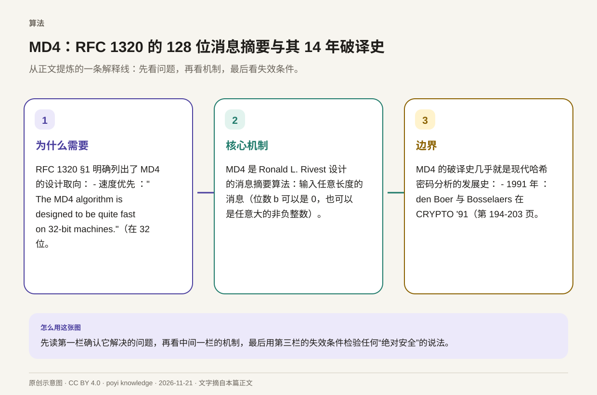
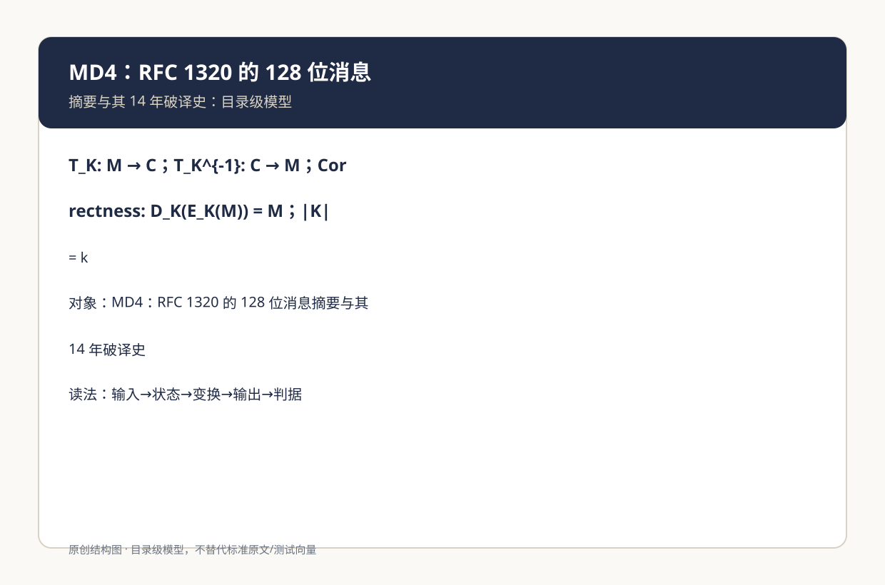

原理与机制
算法：MD4 散列（MD4）。MD4 是 Ronald L.Rivest 设计的消息摘要算法：输入任意长度的消息（位数 b 可以是 0，也可以是任意大的非负整数），输出固定的 128 位（16 字节）"fingerprint"或"message digest"（指纹／消息摘要）。RFC 1320 把它描述为面向数字签名应用的压缩工具——先由摘要把大文件安全地做成 "compressed" 形态，再交给 RSA 之类的公钥密码体制签名（源文对 compressed 自己也加了引号）。MD4 的基本参数：以 512 位（16 个 32 位字）为一个消息块处理；状态是 A、B、C、D 四个 32 位寄存器；输出 128 位。RFC 1320 第 2 节约定：一个"word"（字）是 32 位量，字节序列按"low-order (least significant) byte given first"（低序字节在前）解释成字（小端）；"+"表示模 2^32 加法；X <<< s 表示 32 位循环左移 s 位；not(X)、X v Y、X xor Y、XY 分别是按位非、按位或、按位异或、按位与。计算摘要分五步（RFC 1320 第 3 节）：
1.填充（§3.1）：先追加一个 "1" 位（实现上是 0x80 字节），再补 "0" 位，使消息位数「becomes congruent to 448, modulo 512」（对 512 同余于 448）；「In all, at least one bit and at most 512 bits are appended」（总之至少补 1 位、至多补 512 位）。即使消息长度已经同余于 448，也总是填充。2.追加长度（§3.2）：把填充前的消息长度 b 以 64 位小端（先低 32 位字、后高 32 位字）追加。此后消息「an exact multiple of 512 bits」（长度恰为 512 位的整数倍），记为 M[0..N-1]。3.初始化缓冲（§3.3）：四个寄存器按"low-order bytes first"（低序字节在前）初始化为
- word A:
01 23 45 67（即字 0x67452301） - word B:
89 ab cd ef（即字 0xefcdab89） - word C:
fe dc ba 98（即字 0x98badcfe） - word D:
76 54 32 10（即字 0x10325476）
这组 IV 有一个便于手算的性质：C = not(A)、D = not(B)。4.逐块处理（§3.4）：每块先用三个辅助函数之一做 48 次操作，再回加。三个函数都取三个 32 位字、输出一个 32 位字：
F(X,Y,Z) = XY v not(X) Z——按位条件选择：X 为 1 取 Y，否则取 Z；G(X,Y,Z) = XY v XZ v YZ——按位多数函数：X、Y、Z 中至少两个为 1 才输出 1；H(X,Y,Z) = X xor Y xor Z——按位奇偶函数。记号[abcd k s]表示a = (a + Φ(b,c,d) + X[k] (+ K)) <<< s，其中 Φ 是当前轮的函数。每轮 16 次操作里寄存器角色按 ABCD → DABC → CDAB → BCDA 循环轮转。三轮的消息字顺序、旋转量和常量是：- 第 1 轮（F，无附加常量）：k = 0,1,…,15；s 循环 (3, 7, 11, 19)。- 第 2 轮（G，K = 0x5a827999）：k = 0,4,8,12,1,5,9,13,2,6,10,14,3,7,11,15；s 循环 (3, 5, 9, 13)。- 第 3 轮（H，K = 0x6ed9eba1）：k = 0,8,4,12,2,10,6,14,1,9,5,13,3,11,7,15；s 循环 (3, 9, 11, 15)。5.回加与输出（§3.4-3.5）：每块结束后做
A = A + AA等四个回加（feed-forward）；全部块处理完后，输出按 A 的低序字节开始、到 D 的高序字节结束的 16 个字节。RFC 1320 §3.4 的注记说明两个轮常量的来历：5A827999 原文作「is a hexadecimal 32-bit constant, written with the high-order digit first」（是一个十六进制 32 位常量，高位数字在前；本副本把这句断在两行上），它 "represents the square root of 2"（代表 2 的平方根），其八进制值为 013240474631；6ED9EBA1 "represents the square root of 3"（代表 3 的平方根），八进制值为 015666365641；RFC 注明出处是 Knuth《计算机程序设计艺术》第 2 卷半数值算法第二版第 660 页表 2。

为什么重要
RFC 1320 §1 明确列出了 MD4 的设计取向：
- 速度优先："The MD4 algorithm is designed to be quite fast on 32-bit machines."（在 32 位机器上相当快）整个压缩函数每 512 位块只有 48 次操作，每次操作只有两三条模 2^32 加法（函数值、消息字、可选轮常量）、一条按位函数、一条循环左移，全部落在 32 位通用指令上。- 紧凑、无大表："the MD4 algorithm does not require any large substitution tables; the algorithm can be coded quite compactly."（不需要大的替换表，算法可以写得相当紧凑）MD4 只用三个一行就能写出的按位函数。- 公有领域："The MD4 algorithm is being placed in the public domain for review and possible adoption as a standard."——注意置于公有领域的是算法本身，附录参考代码仍带 RSA Data Security 的版权与许可声明。- 签名场景：源文这一句的主语是「a large file must be」（一条大文件必须被……；本副本把该短语断在两行上），目标是在"in a secure manner before being encrypted with a private (secret) key under a public-key cryptosystem such as RSA"（以安全方式压缩大文件，再在 RSA 这类公钥密码体制下用私钥加密之前）。设计上的取舍同样写在 RFC 里。§4 的猜测是：找到两个相同摘要的消息「on the order of 2^64 operations,」（约需 2^64 次操作），逆转给定摘要的任意原像则「on the order of 2^128」（约 2^128 量级的操作）。"Security Considerations"一节则坦率承认：MD4 "was designed to be exceptionally fast"（被设计得异常快），因此就「in terms of risking successful cryptanalytic attack」（冒着被成功密码分析攻击的风险）而言处于源文所说的「at the edge」（边缘）位置——源文在这里给 at the edge 自己加了引号，而本副本把该词断在两行上；在完成进一步评审之前，非常高安全的应用应改用 MD5。后来的历史证明这个自我评估相当准确——速度换来的结构简洁，正是攻击的入口。从结构上看，MD4 的 IV 是简单的递增字节序列，轮常量只是 RFC 注记里那两个分别 "represents the square root of 2"、"represents the square root of 3"（代表 √2、√3）的简单常量，轮函数也没有为抵抗差分分析刻意复杂化。这些选择都服务于快、小、简单（本文概括），而 1990 年前后对哈希函数差分/迭代攻击的认识还不足。
应用与实例
RFC 1320 §1 给出 MD4 的官方身份标识：对象标识符
md4 OBJECT IDENTIFIER ::= {iso(1) member-body(2) US(840) rsadsi(113549) digestAlgorithm(2) 4}
即 OID 1.2.840.113549.2.4；在 X.509 的 AlgorithmIdentifier 类型中，MD4 的参数应为 NULL 类型。历史上，PKCS #1 v1.5 曾允许在 RSA 签名方案中使用 MD4。RFC 2437（PKCS #1 v2.0，1998 年 10 月）§10.1 的注记明确记录了这一点，并写明 "Because of these results and others (e.g.[9]), MD4 is no longer recommended."（因为这些结果及其他结果，MD4 不再被推荐）。MD4 今天仍在运行的最重要场景是 Windows 的 NTLM 认证。微软开放规范 MS-NLMP §3.3.1 定义 NTLM v1 的 NT 单向函数：
Define NTOWFv1(Passwd, User, UserDom) as MD4(UNICODE(Passwd))
即 NT 哈希（NTLM 里那条哈希值，ms-nlmp 写作 NTLM (NT) hash）就是密码的 UTF-16LE 编码的 MD4 摘要；§5.2 的安全参数索引把"MD4/MD5 usage in NTLM v1"指向 §3.3.1，"MD4/MD5 usage in NTLM v2"指向 §3.3.2；附录 A（密码运算参考）把 MD4(M) 说成"Indicates the computation of an MD4 message digest"（对以 null 结尾的「byte string M」计算 MD4 消息摘要；源文在 null- 与 terminated 之间断了行，所以整词不逐字可引）。由此得到一个常被引用的巧合：空密码的 NT 哈希等于 RFC 1320 测试集的 MD4("") = 31d6cfe0d16ae931b73c59d7e0c089c0——在 Windows 凭据转储里看到这一串，就意味着该账户密码为空。需要强调：MD4 在一切要求碰撞抗性的场合（数字签名、证书）都已不可用，RFC 2437 那句 "MD4 is no longer recommended"（不再被推荐）是正式立场；NTLM 中的使用属于遗留协议兼容，微软自己的规范也把 MD4/MD5 的使用列入安全参数索引。

边界与攻击面
MD4 的破译史几乎就是现代哈希密码分析的发展史：
- 1991 年：den Boer 与 Bosselaers 在 CRYPTO '91（第 194-203 页，Springer-Verlag 1992）发表"An Attack on the Last Two Rounds of MD4"，攻破 MD4 压缩函数的最后两轮。RFC 2437 参考文献 [9] 记录了这一结果。- 1996 年：Hans Dobbertin 在 FSE 1996（LNCS 1039，第 55-72 页）发表"Cryptanalysis of MD4"，给出针对完整算法的 128 位碰撞（此前的 den Boer-Bosselaers 攻击只针对削减轮数的压缩函数）。RFC 2437 §10.1 据此宣布 MD4 不再被推荐；王小云等 2005 年论文的摘要把 Dobbertin 攻击的复杂度记为约 2^20 次 MD4 哈希计算。- 1998 年：Dobbertin 又在 FSE 1998（LNCS 1372，第 284-292 页）证明"The First Two Rounds of MD4 are Not One-Way"——前两轮也不单向。RFC 2437 §10.1 也引用了这一结果（该论文在其参考文献表中列为 [12]）。- 2004 年 8 月：王小云、冯登国、 Lai Xuejia、余洪波向 IACR ePrint 提交 2004/199《Collisions for Hash Functions MD4, MD5, HAVAL-128 and RIPEMD》（2004-08-16 收到，08-17 最后修订），并在 CRYPTO 2004 的 rump session 宣布，对 MD4、MD5、HAVAL-128、RIPEMD 同时给出碰撞。- 2005 年：王小云、Lai Xuejia、冯登国、陈辉、余秀媛的完整版本发表在 EUROCRYPT 2005（LNCS 3494，Springer，DOI 10.1007/11426639_1）。其摘要给出的数字是：新攻击以概率 2^-2 到 2^-6 找到碰撞（caret 记号是本文写法：留存的摘要件把指数印成减号 U+2212，且符号与数字之间还有一个窄空格，因此这里不是逐字引用），复杂度不超过 2^8 次 MD4 哈希计算；在此基础上，MD4 的选择消息原像攻击复杂度低于 2^8（正文将其明确为选择消息的第二原像攻击：先把任意消息 M 修改成满足条件的 M′，再以概率 2^-2 到 2^-6 找到 M′ 的第二原像）；对源文所称的「weak」消息（弱消息），找到另一条同摘要消息只需一次 MD4 计算，而随机消息是弱消息的概率为 2^-122；该攻击可直接用于有两份 MD4 并行结构的 RIPEMD，碰撞复杂度约 2^18 次 RIPEMD 哈希计算。从 1990 年首次公开时的 2^64 猜测（RFC 1186 与 RFC 1320 §4 都写明）到 2004 年的 2^8 实际复杂度，MD4 的碰撞抗性在 14 年间被削去了 56 个数量级。今天 MD4 的碰撞可以在普通设备上瞬间生成，它只配作为密码分析教学的第一课。
历史与背景
- 1990 年 10 月：Rivest 发布 RFC 1186《The MD4 Message Digest Algorithm》，首次公开 MD4 定义。- 1990 年：MD4 论文在 CRYPTO '90（Advances in Cryptology – CRYPTO '90，LNCS 537，第 303-311 页，Springer-Verlag 1991，DOI 10.1007/3-540-38424-3_22）报告。RFC 1320 参考文献 [1] 即引此文。- 1992 年 4 月：RFC 1320《The MD4 Message-Digest Algorithm》发布，取代 RFC 1186；§1 说明主要差别是附录参考实现更可移植。RFC 1320 声明算法置于公有领域，并致谢 Don Coppersmith、Burt Kaliski、Ralph Merkle、Noam Nisan 的评论与建议。其 Status 一节写明：这份备忘录为互联网社区提供信息，不指定任何互联网标准。- 1992 年 4 月：同一作者发布 RFC 1321《The MD5 Message-Digest Algorithm》；RFC 1320 参考文献 [4] 已预告 MD5。RFC 1321 §1 自述 MD5 是"an extension of the MD4 message-digest algorithm"（MD4 消息摘要算法的扩展）：MD5 比 MD4 稍慢，但按源文的说法更"conservative"（源文对这个词自己也加了引号），因为 MD4「being adopted for use more quickly than justified by the existing critical review」（采纳速度快过了当时批评性评审所能保证的程度；本副本把该句断在两行上）；MD5 因此"backs off a bit, giving up a little in speed for a much greater likelihood of ultimate security"（退一步：放弃一点速度，换取最终安全性的更大可能），吸收了评审者的建议。RFC 1321 §5 列出 MD4 与 MD5 的差异：增加第四轮、每步使用唯一加性常量、第 2 轮函数 g 从 (XY v XZ v YZ) 改为 (XZ v Y not(Z)) 等。- 1996-1998 年：Dobbertin 的完整碰撞与前两轮非单向结果发表；1998 年 10 月 RFC 2437 正式把 MD4 从推荐列表移除。- 2004-2005 年：王小云等人的 ePrint 2004/199 与 EUROCRYPT 2005 论文把 MD4 碰撞复杂度降到 2^8；ePrint 论文的标题就把 MD4、MD5、HAVAL-128 与 RIPEMD 并列为碰撞目标。- 谱系：王小云等 2005 年论文摘要指出，MD4 是"the basis for most of the dedicated hash functions such as MD5, SHAx, RIPEMD, and HAVAL"（大多数专用哈希函数——MD5、SHAx、RIPEMD、HAVAL——的基础）；其 Merkle-Damgård 迭代、按位函数族与字级混合结构正是这批函数的共同骨架。
逐步示例与核验
复算示例
取标准或公开测试向量中的一组参数，按“输入—执行—输出”记录：先写出该条目的形式式 (h=H(M),\quad H:{0,1}^{*}\to{0,1}^{n})；再按规范顺序执行每一步，最后把输出与独立实现或标准向量逐字节对照。若没有可引用的数值向量，就只记录结构步骤，不伪造输出。
参考出处
- Wikipedia search entry for MD4 散列. https://zh.wikipedia.org/w/index.php?search=MD4%20%E6%95%A3%E5%88%97
- Handbook of Applied Cryptography (Menezes, van Oorschot, Vanstone). https://www.cacr.math.uwaterloo.ca/hac/